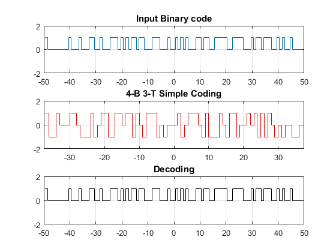

Contents
%----------------------------------------------------------------------% %%---- Final Project -- Simple Version -- Digital Communication -----%% %--------------- Supervisor: Dr.Shirvani Moghaddam ---------------% %------ Source by Mohammad Reza Farhadi Nia ---- Date:6 Dec 2020 --% %----------------------------------------------------------------------%
Encoding
pnSequence1 = comm.PNSequence('Polynomial','x^9+x^5+1',... 'SamplesPerFrame',1022,'InitialConditions',[0 0 0 0 0 0 0 0 1]); Binary_Random_Input = pnSequence1(); [Binary_Random_Input(1:511) Binary_Random_Input(512:1022)]; %validity test pnSequence2 = comm.PNSequence('Polynomial','x^9+x^5+1',... 'BitPackedOutput',true,'NumPackedBits',4,... 'SamplesPerFrame',127,'InitialConditions',[0 0 0 0 0 0 0 0 1]); Hex_Random_Input = pnSequence2(); FourBinary = dec2bin(Hex_Random_Input(1:25)); DC_bias_tracked = 0*(1:10); Encoding = []; for i = 1:25 switch Hex_Random_Input(i) case 0 DC_bias_tracked(1) = ~DC_bias_tracked(1); if DC_bias_tracked(1) == 1 Encoding = [Encoding 1 0 0]; else Encoding = [Encoding -1 0 0]; end case 1 DC_bias_tracked(2) = ~DC_bias_tracked(2); if DC_bias_tracked(2) == 1 Encoding = [Encoding 0 -1 0]; else Encoding = [Encoding 0 1 0]; end case 2 DC_bias_tracked(3) = ~DC_bias_tracked(3); if DC_bias_tracked(3) == 1 Encoding = [Encoding 0 0 1]; else Encoding = [Encoding 0 0 -1]; end case 3 DC_bias_tracked(4) = ~DC_bias_tracked(4); if DC_bias_tracked(4) == 1 Encoding = [Encoding 1 1 0]; else Encoding = [Encoding -1 -1 0]; end case 4 DC_bias_tracked(5) = ~DC_bias_tracked(5); if DC_bias_tracked(5) == 1 Encoding = [Encoding 0 1 1]; else Encoding = [Encoding 0 -1 -1]; end case 5 DC_bias_tracked(6) = ~DC_bias_tracked(6); if DC_bias_tracked(6) == 1 Encoding = [Encoding 1 0 1]; else Encoding = [Encoding -1 0 -1]; end case 6 DC_bias_tracked(7) = ~DC_bias_tracked(7); if DC_bias_tracked(7) == 1 Encoding = [Encoding -1 1 -1]; else Encoding = [Encoding 1 -1 1]; end case 7 DC_bias_tracked(8) = ~DC_bias_tracked(8); if DC_bias_tracked(8) == 1 Encoding = [Encoding -1 -1 1]; else Encoding = [Encoding 1 1 -1]; end case 8 DC_bias_tracked(9) = ~DC_bias_tracked(9); if DC_bias_tracked(9) == 1 Encoding = [Encoding 1 -1 -1]; else Encoding = [Encoding -1 1 1]; end case 9 DC_bias_tracked(10) = ~DC_bias_tracked(10); if DC_bias_tracked(10) == 1 Encoding = [Encoding 1 1 1]; else Encoding = [Encoding -1 -1 -1]; end case 10 Encoding = [Encoding -1 0 1]; case 11 Encoding = [Encoding 1 0 -1]; case 12 Encoding = [Encoding 0 -1 1]; case 13 Encoding = [Encoding 0 1 -1]; case 14 Encoding = [Encoding -1 1 0]; case 15 Encoding = [Encoding 1 -1 0]; end end
Decoding
Most Important Code with Trick
ThreeTernary = join(string(reshape(Encoding,3,[]))'); % & HEAVY DEBUGING :))) Decoding = []; for i = 1:25 switch ThreeTernary(i) case {'1 0 0' , '-1 0 0'} Decoding = [Decoding 0 0 0 0]; case {'0 -1 0' , '0 1 0'} Decoding = [Decoding 0 0 0 1]; case {'0 0 1' , '0 0 -1'} Decoding = [Decoding 0 0 1 0]; case {'1 1 0' , '-1 -1 0'} Decoding = [Decoding 0 0 1 1]; case {'0 1 1' , '0 -1 -1'} Decoding = [Decoding 0 1 0 0]; case {'1 0 1' , '-1 0 -1'} Decoding = [Decoding 0 1 0 1]; case {'-1 1 -1' , '1 -1 1'} Decoding = [Decoding 0 1 1 0]; case {'-1 -1 1' , '1 1 -1'} Decoding = [Decoding 0 1 1 1]; case {'1 -1 -1' , '-1 1 1'} Decoding = [Decoding 1 0 0 0]; case {'-1 -1 -1' , '1 1 1'} Decoding = [Decoding 1 0 0 1]; case '-1 0 1' Decoding = [Decoding 1 0 1 0]; case '1 0 -1' Decoding = [Decoding 1 0 1 1]; case '0 -1 1' Decoding = [Decoding 1 1 0 0]; case '0 1 -1' Decoding = [Decoding 1 1 0 1]; case '-1 1 0' Decoding = [Decoding 1 1 1 0]; case '1 -1 0' Decoding = [Decoding 1 1 1 1]; end end
Plot
figure subplot(3,1,1);stairs([-length(Binary_Random_Input(1:100))/2+1/2:length(Binary_Random_Input(1:100))/2-1/2],Binary_Random_Input(1:100)); axis([-length(Binary_Random_Input(1:100))/2 length(Binary_Random_Input(1:100))/2 -2 2]);title('Input Binary code');grid on; subplot(3,1,2);stairs([-length(Encoding)/2+1/2:length(Encoding)/2-1/2],Encoding, 'r'); axis([-length(Encoding)/2 length(Encoding)/2 -2 2]);title('4-B 3-T Simple Coding');grid on; subplot(3,1,3);stairs([-length(Decoding)/2+1/2:length(Decoding)/2-1/2],Decoding,'black'); axis([-length(Decoding)/2 length(Decoding)/2 -2 2]);title('Decoding');grid on;